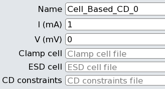

This check is based upon the LDL CD checks discussed under “Current Density Checks”. This check may only be specified once and may not be specified with any other CD or P2P high-level check.
Current density is measured on layers having resistance extraction statements included in the rule file. LVS Power Name and LVS Ground Name nets must be specified in the rules. See Figure 1 for a complete set of checked paths.
The following protection schemes are searched for:
ESD cell exists between top-level IO and power supply net.
ESD cell exists between top-level IO and ground supply net.
Clamp cell exists between power and ground supply nets.
Any missing scheme is reported. Current densities are calculated for these path segments:
IO pad to an ESD cell pin.
ESD cell pin to power or ground supply.
Power supply net to clamp cell pin.
Clamp cell pin to ground net.
By default, all current densities on resistivity layers are reported. The reporting thresholds can be configured per-layer.
The rule generator Graphical User Interface fields appear as follows:

A clamp cell file and ESD cell file are required. The lines for each of these files are of this form, with one cell per line:
<cell_name> <pin_name1> <pin_name2>The CD constraints file pathname is optional. It contains lines of this form, with one command per line:
PERC LDL CD <layer_name> CONSTRAINT <value>The layer_name is of a resistance layer. The value is a threshold current density to begin reporting discrepancies for the layer.
Additional details are given under “CELL_BASED_CD Netlist Setup Options”.
Unprotected IO nets are shown in the PERC Report as follows:
1 Net <name> [ <type> ]
No correctly connected {ESD | clamp} protection cell found between net <name> and <name> Unprotected nets are listed in the PERC Results tab in Calibre RVE when the DFM database is loaded. A separate report file with the “.cd” extension contains the current density results. The general form of these results is as described under “LDL CD Report File Format”.
More than one source or sink can be reported. The word “PORT” indicates a top-level port. The word “cellport” indicates a protection cell pin. A sink can be a top-level port. A source can be a cell pin.
Current density results are in an ASCII results database with the “.cd.rdb” extension. They appear in a “CD:” tab in Calibre RVE when the DFM database is loaded.
The GUI pane supports the following options in the batch rule file generator command perc_ldl::include_check ‑check_options list, which is derived from the perc_ldl::setup_check and perc_netlist::setup_check ‑check_params options. These options correspond to the GUI fields in the order they appear.
‘{’-name check_name \ -i source_current \ -v drain_voltage \ -clamp_cell_file filename \ ‑esd_cell_file filename \ [‑cd_constraints_file filename] ‘}’ |
The required -i and -v arguments specify the source current and drain voltage in milliamps and millivolts, respectively. They default to 1.0 and 0, respectively, in the GUI. The required ‑clamp_cell_file argument specifies the name and pins of clamp cells. The required ‑esd_cell_file argument specifies the same things as the clamp cell file but for ESD cells. The ‑cd_constraints_file option specifies CD reporting threshold values per-layer. All CD values on resistivity layers are reported by default.
See “CELL_BASED_CD LDL Setup Options” and “CELL_BASED_CD Netlist Setup Options” for details.